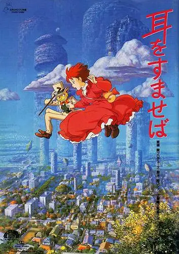

Eu, Meus Sonhos e Desejos
Meu nome é Sabrina Yumi Nishida Kath, tenho 17 anos e estudo no Colégio Estadual São Pedro Apóstolo, e assim como todos eu tenho sonhos, desejos metas e objetivos. Meu maior objetivo do momento é terminar o Ensino Médio. Quando eu era
criança tinha muitas dúvidas sobre o que eu faria na faculdade, mas cheguei a decião de que cursaria Arquitetura. Na época minha mãe estava cursando Pedagogia na PUCPR, o que gerou em
mim o desejo de fazer o curso na PUCPR também.

Esse é meu filme favorito do Studio Ghibli, "Sussuros do Coração" conta a história de uma menina no ensino médio que ainda não sabe o que quer fazer depois de terminar a escola.
Então ela começa uma jornada nas férias para descobrir o que ela realmente quer, no meio do caminho ela se apaixona por um dos colegas. Fazendo parte da jornada de autoconhecimento,
esse amor vai ajudá-la a se descobrir.